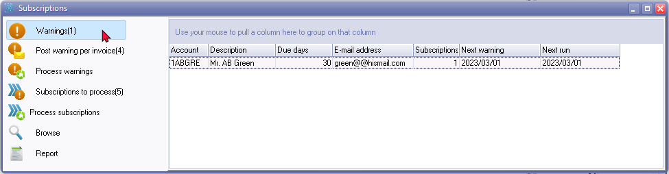
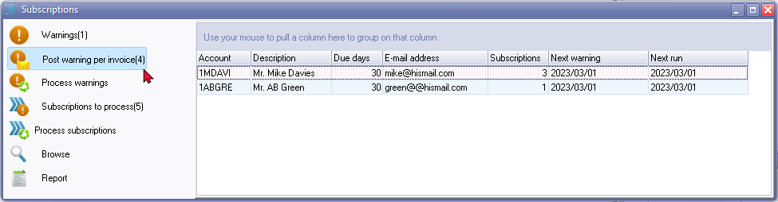
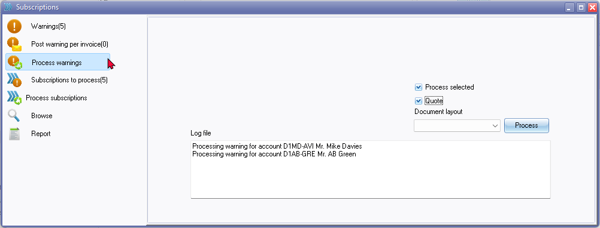
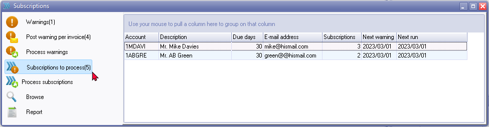
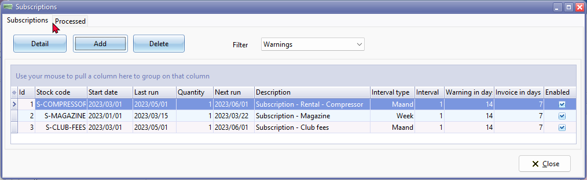
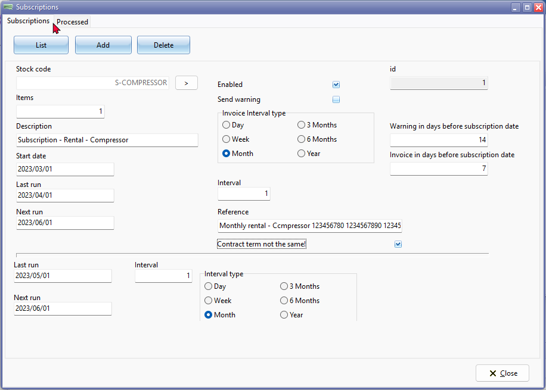
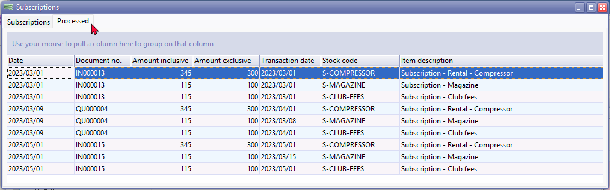
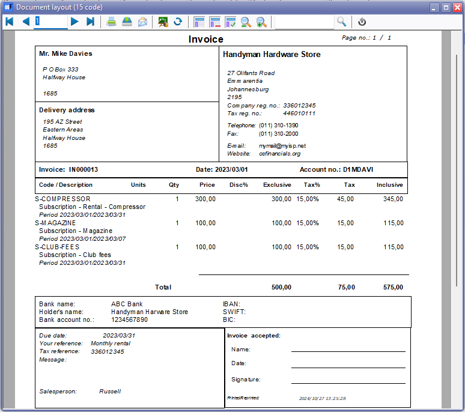

Process subscriptions
Process subscriptions
If the "Show for this user" field on Plugin → Document plugins → Subscriptions (Setup ribbon), is selected, the Subscriptions plugin will automatically be launched if you open the Set of Books and any subscriptions need processing.
If the "Show for this user" field is not selected, you may launch the Subscriptions plugin from the Subscriptions icon on the Default ribbon.
To manage subscriptions:
If the Subscriptions plugin is not automatically launched, click on the Subscriptions icon on the Default ribbon. The Subscriptions (Warnings) plugin screen is displayed:

The Warnings option for subscriptions will list the warnings of subscriptions.
Only those debtor accounts for which the "Send warnings" field is selected on the Detail form, will be included on this list.
Filter / Search for Subscriptions
Click on the Browse button.

Click on the Search button. By default, no options should be selected, but you may select the criteria to filter or locate specific subscriptions.
Post warnings per invoice
The Process warning per invoice option for subscriptions will list the warnings of subscriptions.
Only those debtor accounts for which the "Send warnings" field is selected on the Detail form, will be included on this list.

Process warnings
The Process warnings option for subscriptions will process the warnings of subscriptions.
Only those debtor accounts for which the "Send warnings" field is selected on the Detail form, will be processed.

Process selected - Tick this option to process selected subscriptions. If this option is not selected, all subscriptions will be listed.
Quote - Tick this option to process warnings as a Quote. If this field is not selected, Invoices will be generated.
Document layout - The default layout file is stored in the following folder:
" …\plug_ins\reports\Subscriptions\en\layouts "
Log file – The details of the debtor account(s) and subscription(s) will be displayed. An example, is as follows:
Processing warning for account D1MD-AVI Mr. Mike Davies
Processing warning for account D1AB-GRE Mr. AB Green
Subscriptions to process
The Subscriptions to process option for subscriptions will list the debtor accounts which subscriptions need processing.
The number of subscriptions, in this example is (5). In this example, this means that one debtor account has 2 subscriptions and the other debtor account has 3 subscriptions.

You may double-click on a selected debtor account to view a list of the subscriptions. The Subscriptions form consists of two tabs and is as follows:
- Subscriptions tab - You may view the details of the selected subscription, you may click on the Detail button to view and or edit, if necessary.
- Processed tab - You may view a list of the processed transactions and double-click to print a selected invoice or quote.
Process subscriptions
The Process subscriptions option allows you to process Invoices or Quotes or No document (already invoiced) for subscriptions. You have the option to process subscriptions via e-mail manually (snail-mail via postal services or courier).

Process selected - Tick this option to process selected subscriptions. If this option is not selected, all subscriptions will be listed.
Invoices - Invoices is the default option. You may select to process Quotes or No document (already invoiced) options.
Send e-mail - If this option is not ticked, you may add print the documents manually. If this option is selected (ticked), the e-mail documents (invoices or quotes) will be attached as an attachment to the e-mail message to the respectable debtor accounts.
You may add or customize the email templates to be displayed in the e-mail message.
Process – This button will process the subscriptions.
Process Post warnings per invoice – This button will process and post the warnings per invoice.
Log file – The details of the debtor account(s) and subscription(s) will be displayed. An example, is as follows:
Processing warning for account D1MD-AVI Mr. Mike Davies
Processing warning for account D1AB-GRE Mr. AB Green
Details and Processed subscriptions
You may click double-click on a subscription on the list in the Warnings, Post warning per invoice, Subscriptions to process and Browse screens, to edit a subscription or to view and print quotes and invoices for processed subscriptions.
Subscriptions - List

Subscriptions - Detail

Subscriptions - Processed
View processed subscriptions. The documents on this list will list all subscriptions processed with the Subscriptions plugin as Unposted Invoices or Quotes. Each document will list the each subscription included in the document.
The documents will be processed as an unposted Invoice or Quote, which have not been updated (posted) to the ledger.

To access these documents, you may go to Documents (Default ribbon) and select the Document type Invoices or Quotes.
Double-click on a subscription. The document (Invoice or Quote) will be printed.
